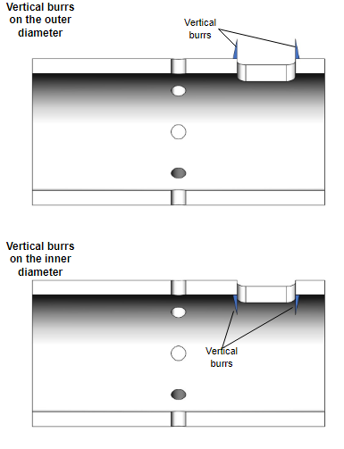

Machining Parameters
Standard machining parameters |
Starting machining parameters |
|
|---|---|---|
| Cutting speed (m/min) | 60 - 250 | 150 |
| Feed per revolution (mm/rev) | 0.1 - 0.5 | 0.3 |
| Depth of cut (mm) | 0.5 - 2.0 | 1.0 |
Adjust the depth of cut depending on the burr size (Burr root thickness needs to be 0.1 mm or less). If burrs are too large, the Brush may be damaged even if the depth of cut is less than the maximum (2 mm) listed in the table. |
- If the Brush is used beyond the usable bristle height (ℓ), the Holder may interfere with the workpiece and the tool may be damaged.
- Uniform deburring and edge quality can be achieved by rotating the workpiece in both clockwise and counter-clockwise directions. Rotate the workpiece in both directions as needed.
- Reduce the size of large burrs as much as possible before using the product. If burrs are too large, the tool wear will be quick and the tool life may be shortened.
- It is easier to remove burrs if their directions are vertical rather than horizontal.

- If burrs remain, try the followings:
- Decrease the feed per revolution
- Increase the number of passes